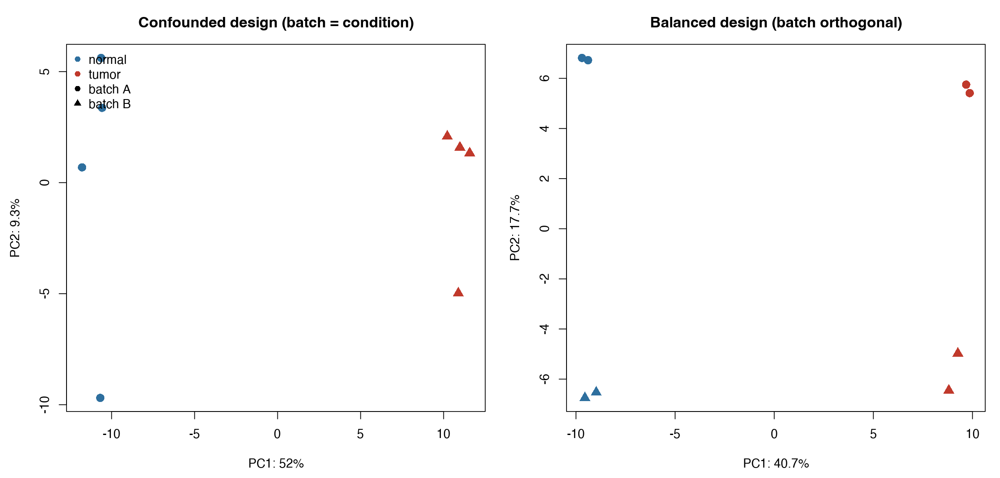

批次效应：别让它毁掉你的差异分析
怎么发现（PCA 双标注）、怎么处理（混淆程度决策表）、为什么校正只能画图不能检验——预防重于补救的完整清单。
批次效应：RNA-seq 最隐蔽的坑
批次效应指与生物学问题无关、却系统性改变表达谱的技术因素：上机日期、试剂批号、建库人、测序 lane、甚至不同批次的冻存时间。它是 RNA-seq 最常见的技术噪声来源之一，影响之广值得单独写成一篇综述1。危险在于：批次效应的幅度经常大于生物学差异——同批次的肿瘤与正常样本长得比跨批次的同组样本更像。
典型的翻车数据：PCA 前两个维度显示样本按批次泾渭分明地分开，分组信息在第三个维度才隐约出现。此时直接做差异分析，「显著基因」里混杂大量批次相关的假信号。
发现：让批次在图上现形
批次信息必须从建库起就记进样本表（上机日期、lane、试剂批号），否则事后无从谈起。发现手段是 PCA 与样本距离热图（代码见 No.004），把分组与批次同时标注到图上：
plotPCA(vsd, intgroup = c("condition", "batch"))判读规则：同组样本在批内聚成小团、批间整体位移但组内方向一致 → 可校正；样本完全按批次排列、组内结构消失 → 先怀疑实验设计，再谈统计补救。

处理：先看混淆程度，再选手段
| 批次与分组的关系 | 能否处理 | 方案 |
|---|---|---|
| 正交（每组都有两个批次） | ✅ 完全可处理 | design 公式建模：~ batch + condition |
| 部分混淆（某组集中在一个批次） | ⚠️ 有限处理 | 建模 + 谨慎解释，功效下降要如实报告 |
| 完全混淆（对照组全在批次 A，处理组全在批次 B） | ❌ 无法处理 | 批次与分组无法分离——任何统计方法都救不了，必须重做实验或补样本 |
这是批判性思维最该用武之地的地方：遇到完全混淆的数据，任何「跑出来的结果」都不可信——不是代码问题，是信息本身不存在。差异分析的 design 公式能处理正交与部分混淆两种情形：
dds <- DESeqDataSetFromMatrix(mat, coldata, design = ~ batch + condition)建模优先，校正只用于画图
处理批次有两条路线，分工完全不同，别用反了：
## 路线 A（推荐）：建模处理 —— 差异检验交给 design 公式
## DESeq2 在模型中同时估计批次与分组效应，检验的是"扣除批次后"的组间差异
## 路线 B：事后校正 —— 只用于"画图"，不用于检验
vsd <- vst(dds, blind = FALSE)
assay(vsd) <- limma::removeBatchEffect(assay(vsd), vsd$batch)
plotPCA(vsd, intgroup = c("condition", "batch")) # 图会干净很多
## ComBat（sva 包）：经验贝叶斯校正，同样只用于可视化或聚类
library(sva)
mod <- model.matrix(~ condition, data = coldata)
corrected <- ComBat(dat = assay(vsd), batch = coldata$batch, mod = mod)红线：不要把 ComBat / removeBatchEffect 校正后的表达值再喂给 DESeq2 或 limma 做差异检验——事后校正会扭曲方差结构，产生假阳性与假阴性。检验阶段批次问题一律交给 design 公式，校正值只用于 PCA、热图等展示场景2,3。
预防重于补救：设计阶段就该做的事
- 每个分组 ≥ 3 个生物学重复——更多重复比更深测序更值4；
- 分组内混批：每个批次里都包含各分组的样本（平衡设计），批次才能被建模分离；
- 随机化上机：样本随机分配 lane / 上机日期，不要按分组整批送测；
- 记录一切：日期、lane、试剂批号、建库人——没有记录的批次等于不存在，事后无法建模；
- 区分重复类型：同一份 RNA 测两次是技术重复（合并或取一即可），不同个体的多次测量是生物学重复（差异分析真正的统计单位）。
一句话总结：批次效应防不胜防但可治可控——设计阶段避免混淆，分析阶段如实建模，展示阶段再用校正画图。顺序反过来，就是假阳性的生产流水线。
延伸阅读与参考文献
- Leek JT, Scharpf RB, Bravo HC, et al. Tackling the widespread and critical impact of batch effects in high-throughput data. Nature Reviews Genetics. 2010;11(10):733–739. doi:10.1038/nrg2825
- Johnson WE, Li C, Rabinovic A. Adjusting batch effects in microarray expression data using empirical Bayes methods. Biostatistics. 2007;8(1):118–127. doi:10.1093/biostatistics/kxj037
- Leek JT, Johnson WE, Parker HS, Jaffe AE, Storey JD. The sva package for removing batch effects and other unwanted variation in high-throughput experiments. Bioinformatics. 2012;28(6):882–883. doi:10.1093/bioinformatics/bts034
- Liu Y, Zhou J, White KP. RNA-seq differential expression studies: more sequence or more replication? Bioinformatics. 2014;30(3):301–304. doi:10.1093/bioinformatics/btt688